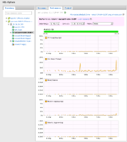

Available only in vFabric Hyperic
This page describes HQ vSphere page, enabled by the vSphere plugin in VMware vFabric™ Hyperic®. This page is present in the Hyperic user interface only if you have vSphere components under management.
- About the HQ vSphere Page
- HQ vSphere Inventory Tab
- HQ vSphere Summary Tab
- HQ vSphere Performance Tab
- HQ vSphere Control Tab
About the HQ vSphere Page
The HQ vSphere page is an interface for monitoring and managing vSphere Hosts and VMs available in vFabric Hyperic.
See vSphere for information about the management functions supported for each resource type and configuration instructions.
| "Performance data not available?" The Performance tab appears for a VM only if there is an Hyperic Agent running in the VM. For information about installing an Hyperic Agent, see Configure and Run the Hyperic Agent. |
Display the HQ vSphere Page
To display the HQ vSphere page, select HQ vSphere from the Resources tab in the Masthead.
Note: The HQ vSphere option appears on the Resources tab only in vFabric Hyperic, and only if you have vSphere components under management.
You can also navigate to the HQ vSphere page from the Resource Hub. The resource page for a vCenter server or vSphere Host has a View in HQ vSphere link above the Monitor tab.

HQ vSphere and Resource Permissions
In vFabric Hyperic, a user can only access resources that are assigned to groups to which the user's role grants access. The accessible resources are further limited by the role's permissions to inventory types.
In other words, you can see PlatformA in browse dialogs and navigate to it if: (1) it is a member of a group assigned to your role, and (2) that role grants access to platforms.
The HQ vSphere user interface behaves somewhat differently: if you have view access to platforms, you can see all of the vSphere Hosts and vSphere VMs in the deployment whether or not they belong to a group assigned to your role.
Note also that even if your role does not grant view permission to servers, vCenter servers will appear in the HQ vSphere page. A vCenter server is the root of the vSphere resource hierarchy and is visible regardless of role permissions; the only resource data exposed for the vCenter server is its name.
HQ vSphere Inventory Tab
The Inventory tab on the HQ vSphere page is a tree of the vSphere resources under HQ management, organized in the resource type hierarchy shown below. The lowest level appears for a VM that has an Hyperic Agent running and monitoring resources running in the VM.
The contents of the Inventory tab are updated once per minute.
You can use the Inventory tab to view the virtual resource hierarchy and to navigate among resources. When you select a resource, the tab or tabs on the right side of the page contain resource data, performance charts, and resource control commands, as appropriate to the resource type.
The table below shows the vSphere resource type hierarchy; the right column indicates the inventory level for a type in the Hyperic inventory model.
| Vsphere Resource Hierarchy | Inventory Type |
| VMware vCenter |
server |
| VMware vSphere Host |
platform |
| VMware vSphere VM |
platform |
| Hyperic Agent-managed resource in VM |
server |
The screenshot shows an expanded hierarchy in the Inventory tab.

| Icons in the vSphere Inventory Tab The icon to the left of an item in the resource tree indicates the type of the resource, and for a VM, its availability status. For information about how VM availability is determined, see VMware vSphere VM Metrics below.
|
HQ vSphere Summary Tab
The Summary tab, available when any resource in the Inventory tab is selected, displays properties for the selected resource, and its parent resource, as applicable.
| Jump to Resource Hub View of a Resource To view a vSphere resource in the Hyperic resource hub — for instance to visit its Inventory or Alert page — click the view resource link to the right of the resource name. |
Summary Tab for vCenter
When a vCenter Server instance is selected in the HQ vSphere page, the Summary tab contains the name of the vCenter instance. You can view inventory and configuration properties for the vCenter instance in the Resource Hub — click view resource next to the resource name to view it in the Resource Hub.
Summary Tab for vSphere Hosts
The Summary tab for a vSphere Host displays the following properties:
- Host Information
- Hostname
- Location
- Manufacturer
- Model
- VMware Version
- Processor Details
- Type - of the processor
- CPUs - Processor sockets and cores per socket
- Network Details
- IP Address
- Default Gateway
- DNS - primary and secondary DNS server
Summary Tab for vSphere VM
The Summary tab for a vSphere VM displays the following VM properties:
- VM Information
- Hostname - of the vSphere Host (ESX platform) where the VM runs
- Guest OS - operating system running in the VM
- vCPU(s) - number of virtual processors in the VM
- Memory - VM memory, in MB
- MAC Address
- IP - VM's IP address
- VM Version - virtual machine hardware version
- Tools Version - version of VMware Tools on the VM.
- Config Details
- ESX Host - IP address of the vSphere Host (ESX platform) where the VM runs
- Resource Pool - resource pool with which the VM is associated
- Config File - path to the the VM configuration (.vmx) file, expressed using the symbolic link path to the VMFS volume where the file is stored
Properties for the vSphere Host where the VM runs, described above in Summary Tab for vSphere Hosts, are shown below the VM properties.
If the VM does not have an Hyperic Agent running in it, the Summary tab has a "Performance data not available" near the top of the page.
Summary Tab for a Managed Resource in the VM
Note: This information applies to a VM with a running Hyperic Agent that is managing resources in the VM. Otherwise, resources running in the VM do not appear in the HQ vSphere page.
When you select a managed resource running in a VM, the Summary tab displays the vSphere Host and VM properties described in Summary Tab for vSphere VM.
The contents of the Summary tab are updated once per minute.
Click the thumbnail for an example screenshot; the selected resource is a DB2 server running on a VM whose name is "vmcent54x64-db297".

To view inventory properties for the managed resource itself, click the view resource link next to the resource name to view the resource in the Resource Hub.
HQ vSphere Performance Tab
The Performance tab appears when a vSphere Host is selected, and, if the VMs running on the host have Hyperic Agents running, for each VM, and for the managed resources running in the VMs.
The contents of the Performance tab are updated once per minute.
| If a VM does not have an agent running in it, no Performance tab appears. You can view the VM metrics in its Monitor page in the Resource Hub. Click view resource next to the "Hostname" property on the VM's Summary tab. |
View Metrics
The Performance tab displays an Availability bar, and a chart for each metric currently enabled for the selected resource type.
Click the thumbnail for the Performance tab for a vSphere Host.

Click the thumbnail for the Performance tab for a vSphere VM.

The tables in VMware vSphere Host Metrics and VMware vSphere Host Metrics list supported vSphere metrics and default settings.
Twelve hours history is displayed by default. You can use the Data Range pull-down to set the display range to the most recent:
- 1, 4, or 12 hours
- 1 or 2 days,
- 1 week, or
- 1 month
Correlate Metrics
On the Performance tab for a VM or an Hyperic Agent-managed resource running in the VM, you can use the Compare pull-down to correlate the selected resource's performance with its parent or grandparent. You can:
- Compare each VM metric with its vSphere Host equivalent — For example compare the VM's "Disk Usage (Average)" metric to its host's "Disk Usage (Average)" metric; the VM's "CPU Usage (Average)" metric to its host's "CPU Usage (Average)" metric; and so on. Click the thumbnail for an example screenshot.

- Compare each VM metric to a selected vSphere Host metric — For example, compare each VM metric to the "Disk Usage (Average)" metric of its vSphere host. Click the thumbnail for an example screenshot.

- Compare metrics for a managed resource in the VM with performance of the VM or the vSphere host — Use the Compare pull-down to select a VM or Host metric - the charts for the managed resource metrics will be overlayed with the line for the selected VM or host metric. Click the thumbnail for an example in which the vSphere Hosts's "CPU Usage (Average)" counter is overlayed on each Hyperic Agent metric chart.

HQ vSphere Control Tab
The The Control tab appears when a VM is selected (if there is an Hyperic Agent running in the VM) and allows you to issue a control command to the VM. See Management Functions for VMware VSphere VM for information about the supported control actions.
Click the thumbnail to see the an example screenshot.

{kind=link}
| If a VM does not have an agent running in it, no Control tab appears. You can run control actions from the "Control" page for the VM in the Resource Hub. Click view resource next to the "Hostname" property on the VM's Summary tab. |
Metrics
VMware vSphere Host Metrics
| Name | Alias | vCenter Statistics Level | Definition | Units | Category | Default On | Default Interval |
|---|---|---|---|---|---|---|---|
| Availability | Availability | n/a, Availability is determined by HQ; it is not a vCenter statistic. | The plugin determines a vSphere Host's availability by querying vCenter for the host's power state, once per minute, by default. Availability takes these values:If the power state is:
|
percentage | AVAILABILITY | true | 1 min |
| Uptime | sys.uptime.latest | sec | AVAILABILITY | false | 1 min | ||
| CPU Usage (Average) | cpu.usage.average | 1 | CPU usage as a percentage during the interval. Actively used CPU of the host, as a percentage of the total available CPU. Active CPU is approximately equal to the ratio of the used CPU to the available CPU. available CPU = # of physical CPUs × clock rate 100% represents all CPUs on the host. For example, if a four-CPU host is running a virtual machine with two CPUs, and the usage is 50%, the host is using two CPUs completely. |
percent | UTILIZATION | true | 5 min |
| Disk Usage (Average) | disk.usage.average | 1 | Aggregated disk I/O rate. For a vSphere host, this includes the rates for all virtual machines running on the host during the collection interval. | KB per second | UTILIZATION | true | 5 min |
| Highest Disk Latency | disk.maxTotalLatency.latest | 1 | Highest latency value across all disks used by the host. Latency measures the time taken to process a SCSI command issued by the guest OS to the virtual machine. The kernel latency is the time VMkernel takes to process an IO request. The device latency is the time it takes the hardware to handle the request. Total latency = kernelLatency + deviceLatency |
ms | UTILIZATION | true | 5 min |
| Memory Usage (Average) | mem.usage.average | 1 | memory usage = memory consumed ÷ host configured memory size |
percent | UTILIZATION | true | 5 min |
| Network Usage (Average) | net.usage.average | 1 | Sum of the data transmitted and received during the collection interval.Sum of data transmitted and received across all physical NIC instances connected to the host. |
KB | UTILIZATION | true | 5 min |
| CPU Reserved Capacity | cpu.reservedCapacity.average | 2 | Total CPU capacity reserved by the virtual machines. |
none | UTILIZATION | false | 5 min |
| CPU Throttled (1 min. Average) | rescpu.maxLimited1.latest | 3 | percent | UTILIZATION | false | 5 min | |
| CPU Throttled (5 min. Average) | rescpu.maxLimited5.latest | 3 | percent | UTILIZATION | false | 5 min | |
| CPU Throttled (15 min. Average) | rescpu.maxLimited15.latest | 3 | percent | UTILIZATION | false | 5 min | |
| CPU Running (1 min. Average) | rescpu.runav1.latest | 3 | percent | UTILIZATION | false | 5 min | |
| CPU Running (5 min. Average) | rescpu.runav5.latest | 3 | percent | UTILIZATION | false | 5 min | |
| CPU Running (15 min. Average) | rescpu.runav15.latest | 3 | percent | UTILIZATION | false | 5 min | |
| CPU Active (1 min. Average) | rescpu.actav1.latest | 3 | percent | UTILIZATION | false | 5 min | |
| CPU Active (5 min. Average) | rescpu.actav5.latest | 3 | percent | UTILIZATION | false | 5 min | |
| CPU Active (15 min. Average) | rescpu.actav15.latest | 3 | percent | UTILIZATION | false | 5 min | |
| Memory Swap In | mem.swapin.average | 2 | Sum of memory swapin of all powered on VMs on the host. |
KB | UTILIZATION | false | 5 min |
| Memory Swap Out | mem.swapout.average | 2 | Sum of Memory Swap Out of all powered on VMs on the host. |
KB | UTILIZATION | false | 5 min |
| Memory Swap Used | mem.swapused.average | 2 | Amount of memory that is used by swap. Sum of Memory Swapped of all powered on virtual machines and vSphere services on the host. |
KB | UTILIZATION | false | 5 min |
| Memory Balloon | mem.vmmemctl.average | 1 | Sum of Memory Balloon (Amount of memory allocated by the virtual machine memory control driver) of all powered on virtual machines and vSphere services on the host. If the balloon target value is greater than the balloon value, the VMkernel inflates the balloon, causing more virtual machine memory to be reclaimed. If the balloon target value is less than the balloon value, the VMkernel deflate the balloon, which allows the virtual machine to consume additional memory if needed. |
KB | UTILIZATION | true | 5 min |
| Memory Unreserved | mem.unreserved.average | 2 | Amount of memory that is unreserved. Memory reservation not used by the Service Console, VMkernel, vSphere services and other powered on VMs' user-specified memory reservations and overhead memory. |
KB | UTILIZATION | false | 5 min |
| Memory Heap | mem.heap.average | 2 | Amount of VMkernel virtual address space dedicated to VMkernel main heap and related data. |
KB | UTILIZATION | false | 5 min |
| Memory Heap Free | mem.heapfree.average | 2 | Amount of free address space in the VMkernel's main heap. Heap Free varies, depending on the number of physical devices and various configuration options. There is no direct way for the user to increase or decrease this statistic. |
KB | UTILIZATION | false | 5 min |
| Memory Overhead | mem.overhead.average | 1 | Total of all overhead metrics (Amount of additional machine memory allocated to a virtual machine for overhead. The overhead amount is beyond the reserved amount).for powered-on virtual machines, plus the overhead of running vSphere services on the host. |
KB | UTILIZATION | false | 5 min |
| Memory Zero | mem.zero.average | 2 | Amount of memory that is zeroed out (contains only 0s). This statistic is included in Memory Shared. For a vSphere Host, Sum of Memory Zero of all powered on VMs and vSphere services on the host. |
KB | UTILIZATION | false | 5 min |
| Memory Reserved Capacity | mem.reservedCapacity.average | 2 | Total amount of memory reservation used by powered on VMs and vSphere services on the host. Includes overhead amount. |
MB | UTILIZATION | false | 5 min |
| Memory Active | mem.active.average | 2 | Amount of memory actively used, as estimated by VMkernel. Active memory is based on the current workload of the virtual machine or host. For a vSphere Host, sum of the active guest physical memory of all powered on virtual machines on the host, plus memory used by basic VMKernel applications on the host. |
KB | UTILIZATION | true | 5 min |
| Memory Shared | mem.shared.average | 2 | Sum of the shared memory values of all powered-on virtual machines, plus the amount for the vSphere services on the host. The host's Memory Shared may be larger than the amount of machine memory if memory is overcommitted (the aggregate virtual machine configured memory is much greater than machine memory). The value of this statistic reflects how effective transparent page sharing and memory overcommitment are for saving machine memory. |
KB | UTILIZATION | true | 5 min |
| Memory Granted | mem.granted.average | 2 | The total of all granted metrics for all powered-on virtual machines, plus memory for vSphere services on the host. |
KB | UTILIZATION | false | 5 min |
| Memory Consumed | mem.consumed.average | 1 | Amount of machine memory used on the host. Consumed memory includes memory used by virtual machines, the service console, VMkernel, and vSphere services, plus the total consumed memory for all running virtual machines. host consumed memory = total host memory - free host memory |
KB | UTILIZATION | false | 5 min |
| Memory State | mem.state.latest | 2 | Amount of free machine memory on the host. VMkernel has four free-memory thresholds that affect the mechanisms used for memory reclamation. 0 (High) - Free memory >= 6% of machine memory - service console memory 1 (Soft) - Free memory >= 4% of machine memory - service console memory 2 (Hard) - Free memory >= 2% of machine memory - service console memory 3 (Low)- Free memory >= 1% of machine memory - service console memory For 0 and 1, swapping is favored over ballooning. For 2 and 3, ballooning is favored over swapping. |
none | UTILIZATION | false | 5 min |
| Memory Shared Common | mem.sharedcommon.average | 2 | Amount of machine memory that is shared by all powered-on virtual machines and vSphere services on the host. Memory Shared - Memory Shared Common = Host memory saved by sharing |
KB | UTILIZATION | false | 5 min |
| Memory Used by vmkernel | mem.sysUsage.average | 2 | Amount of memory used by the VMkernel. Amount of machine memory used by the VMkernel for "core" functionality (such as its own internal uses, device drivers, etc). It does not include memory used by VMs or by vSphere services. |
KB | UTILIZATION | false | 5 min |
VMware vSphere VM Metrics
| Name | Alias | vCenter Statistics Level | Definition | Units | Category | Default On | Default Interval |
|---|---|---|---|---|---|---|---|
| Availability | Availability | n/a, Availability is determined by HQ; it is not a vCenter statistic. | The plugin determines a VM's availability by querying vCenter for a VM power state, once per minute, by default. Availability takes these values:If the power state is:
|
percentage | AVAILABILITY | true | 1 min |
| Uptime | sys.uptime.latest | 1 | sec | AVAILABILITY | false | 1 min | |
| CPU Usage (Average) | cpu.usage.average | 1 | CPU usage as a percentage during the interval. This value is reported with 100% representing all processor cores on the system. As an example, a 2-way VM using 50% of a four-core system is completely using two cores. |
percent | UTILIZATION | true | 5 min |
| Disk Usage (Average) | disk.usage.average | 1 | Aggregated disk I/O rate. | KB per second | UTILIZATION | true | 5 min |
| Memory Usage (Average) | mem.usage.average | 1 | The percentage of memory used as a percent of all available machine memory. |
percent | UTILIZATION | true | 5 min |
| Network Usage (Average) | net.usage.average | 1 | Sum of the data transmitted and received during the collection interval. |
KB | UTILIZATION | true | 5 min |
| CPU Throttled (1 min. Average) | rescpu.maxLimited1.latest | 3 | percent | UTILIZATION | false | 5 min | |
| CPU Throttled (5 min. Average) | rescpu.maxLimited5.latest | 3 | percent | UTILIZATION | false | 5 min | |
| CPU Throttled (15 min. Average) | rescpu.maxLimited15.latest | 3 | percent | UTILIZATION | false | 5 min | |
| CPU Running (1 min. Average) | rescpu.runav1.latest | 3 | percent | UTILIZATION | false | 5 min | |
| CPU Running (5 min. Average) | rescpu.runav5.latest | 3 | percent | UTILIZATION | false | 5 min | |
| CPU Running (15 min. Average) | rescpu.runav15.latest | 3 | percent | UTILIZATION | false | 5 min | |
| CPU Active (1 min. Average) | rescpu.actav1.latest | 3 | percent | UTILIZATION | false | 5 min | |
| CPU Active (5 min. Average) | rescpu.actav5.latest | 3 | percent | UTILIZATION | false | 5 min | |
| CPU Active (15 min. Average) | rescpu.actav15.latest | 3 | percent | UTILIZATION | false | 5 min | |
| Memory Swap In | mem.swapin.average | 2 | Average memory Swap In. A large number here represents a problem with lack of memory and a clear indication that performance is suffering as a result. |
KB | UTILIZATION | false | 5 min |
| Memory Swap Out | mem.swapout.average | 2 | Average Memory Swap Out. A large number here represents a problem with lack of memory and a clear indication that performance is suffering as a result. |
KB | UTILIZATION | false | 5 min |
| Memory Balloon | mem.vmmemctl.average | 1 | Sum of Memory Balloon (Amount of memory allocated by the virtual machine memory control driver) If the balloon target value is greater than the balloon value, the VMkernel inflates the balloon, causing more virtual machine memory to be reclaimed. If the balloon target value is less than the balloon value, the VMkernel deflate the balloon, which allows the virtual machine to consume additional memory if needed. |
KB | UTILIZATION | true | 5 min |
| Memory Balloon Target | mem.vmmemctltarget.average | 2 | KB | UTILIZATION | false | 5 min | |
| Memory Zero | mem.zero.average | 2 | Amount of memory that is zeroed out (contains only 0s). This statistic is included in Memory Shared. For a vSphere Host, Sum of Memory Zero of all powered on VMs and vSphere services on the host. |
KB | UTILIZATION | false | 5 min |
| Memory Active | mem.active.average | 2 | Amount of memory actively used, as estimated by VMkernel. Active memory is based on the current workload of the virtual machine or host. For a vSphere Host, sum of the active guest physical memory of all powered on virtual machines on the host, plus memory used by basic VMKernel applications on the host. |
KB | UTILIZATION | true | 5 min |
| Memory Shared | mem.shared.average | 2 | The average amount of shared memory. Shared memory represents the entire pool of memory from which sharing savings are possible. The amount of memory that this has been condensed to is reported in shared common memory. So, total saving due to memory sharing equals shared memory minus shared common memory. |
KB | UTILIZATION | true | 5 min |
| Memory Granted | mem.granted.average | 2 | The amount of memory that was granted to the VM by the host. Memory is not granted to the host until it is touched one time and granted memory may be swapped out or ballooned away if the VMkernel needs the memory. | KB | UTILIZATION | false | 5 min |
| Memory Consumed | mem.consumed.average | 1 | The amount of machine memory that is in use by the VM. While a VM may have been configured to use 4 GB of RAM, as an example, it might have only touched half of that. Of the 2 GB left, half of that might be saved from memory sharing. That would result in 1 GB of consumed memory. |
KB | UTILIZATION | false | 5 min |